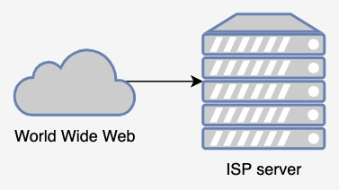
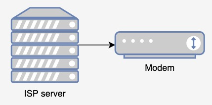
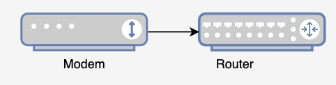
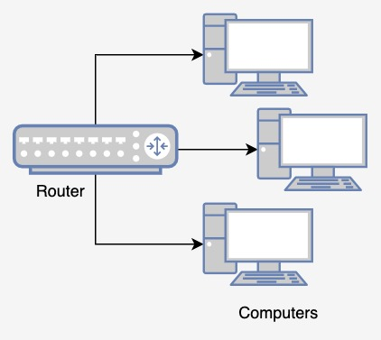

Introduction
We all use web browsers on a day-to-day basis. They access the World Wide Web for us, fetching websites from servers over internet connection to display them. But how does this process work? How do you receive signals from the internet into your home?
The ISP
The ISP, or the Internet Service Provider, is the organisation that provides your internet connection. They give you, for a paid fee, access to the high-speed internet lines underground that let you browse the web.
When a request is made from the client (user), the packet is sent through the ISP into a server which can be used to view webpages. Packets containing information for these webpages are also relayed through the ISP to reach your home.
The Modem
The modem is the box that connects your home to the internet. At the moment, the signals from the ISP that reach your home doesn't do anything as they are different from the signals that your computer can read. The modem, usually installed by your ISP, can decode that information for your computers to use. Ths ISP does this so that they can easily halt your internet connection if you stop paying them ¯\_(ツ)_/¯.
The Router
Currently, the modem can decode signals from the ISP so that you can use them. However, there is one last problem: the modem only has one output. However, the router is here for us! The router acts as a hub that can handle signals for multiple computers at once. It takes one input (from the modem or occasionally another router) and has multiple outputs which can each connect to a computer. It also may have Wi-Fi capabilities which can share the output wirelessly.
Some modems will actually come with a router built-in to it, like a 2-in-1 modem+router combo.
The Browser
Finally, we are back where we started, our good old trusty browser. It will decode the packets sent all the way through the ISP, modem and router into the computer. It checks for any loss of packets, verifies that each packet hasn't been altered, and joins multiple packets representing larger files to reconstruct the original. And lo and behold, the browser can now display the website as if it were the server!
